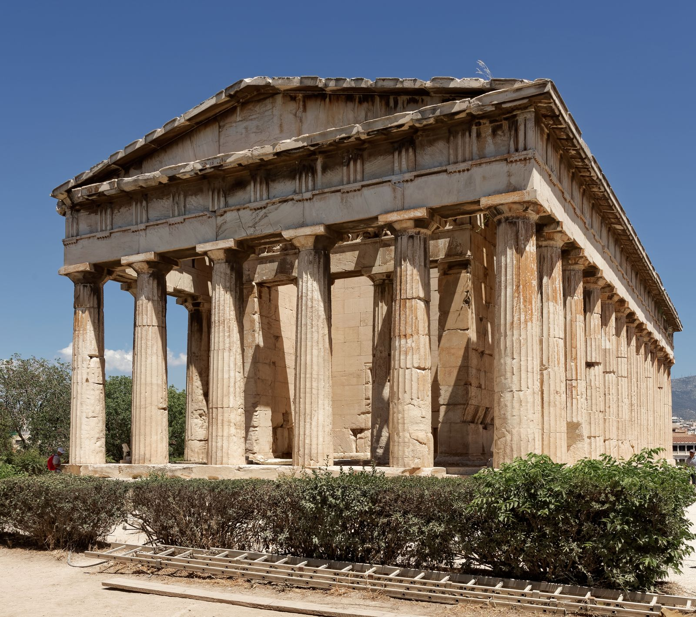

God of Fire, the Forge and Craft, the Maker of Olympus

The Temple of Hephaestus (Hephaisteion), c. 449 BC, the best-preserved Greek temple — Athenian Agora
Hephaestus is the god of fire, the forge and the made thing: the only Olympian who works for a living, and the only one born with a disability the myths do not flinch from describing. Where the other Olympians rule by birthright, spectacle or force, Hephaestus rules by craft, hours at the anvil producing what everyone else merely wields: Zeus's aegis and thunderbolts, Achilles' shield, the golden armour and jewellery of Aphrodite, the very throne of Olympus. He is lame (Homer names the condition outright, using the epithet amphigyeeis, roughly "halt in both feet," as routinely as any other god's epithet of glory), and the myths remember, without much softening, exactly how Olympus first treated that fact: he was thrown bodily from the mountain, not once but in two separate stories neither poet troubled to reconcile. That the god who built everything beautiful the other gods are seen with should also be the god they were first ashamed of is not an incidental detail of his myth. It is close to the whole of it.
The MythsHomer gives Hephaestus two separate falls from heaven, and the epic that contains both never asks its listener to choose between them. In Iliad 18.395–405, Hephaestus tells the story himself to Thetis: ashamed of his lameness at his birth, his mother Hera "wanted to hide" him and flung him from Olympus. He fell into the sea and was caught by Thetis and Eurynome, daughter of Ocean, who hid him for nine years in a hollow cave, where he repaid them by forging brooches, spiral bracelets, cups and necklaces, unseen by gods or men, learning the whole of his craft in secret before anyone on Olympus knew he had survived. In Iliad 1.590–594, an entirely different fall: Hephaestus tells Hera how Zeus once seized him by the foot and hurled him from the threshold of heaven for taking his mother's side in a marital quarrel, and he fell for a full day, from morning to sunset, before landing, "with little life left in him," on the island of Lemnos, where the Sintian people took him in. Ancient readers noticed the contradiction and did not resolve it, and this page will not either. Read together rather than harmonised, the two falls give Hephaestus a double origin built from the same materials, Olympus's cruelty and the kindness of those who catch him, but locate the cruelty in two different hands, his mother's shame and his father's temper. It may be truer to the god to leave both standing than to decide which parent is guiltier.
Grown to mastery in his sea-cave exile, Hephaestus sent Olympus a gift with a barb in it: a golden throne for Hera, beautifully worked and rigged with invisible bonds. She sat, and could not rise. No god on Olympus could loosen the mechanism, including Ares, who tried force and was driven off by fire when he approached the smith directly. Only Dionysus succeeded, not through cleverness but through wine: he got Hephaestus thoroughly drunk and led him back to Olympus on the back of a mule, an escort so undignified and so visually irresistible that it became one of the most painted scenes in Greek vase art, the lame god swaying on his mount amid a procession of satyrs. Once home, Hephaestus released his mother, and the exile ends in laughter rather than in blood. Pausanias (1.20.3), describing a painting he saw at Athens centuries later, still knew the story as a fixed part of the god's biography. Hera's own page tells the same episode from the other side of the chair; read together, it is the one myth in which the wronged son and the mother who once threw him out negotiate, however roughly, something like a reconciliation.
By the time of the Odyssey, Hephaestus's wife is Aphrodite, and the bard Demodocus sings the story of how the smith caught her with Ares (Odyssey 8.266–366). Warned by Helios, who misses nothing, Hephaestus said nothing, went to his forge, and built a net of chains "finer than a spider's web," invisible and unbreakable, rigged above his marriage bed. He announced a journey to Lemnos, Ares slipped in, Aphrodite joined him, and the net dropped, binding the pair together mid-act, unable to move. Hephaestus then did the one thing guaranteed to make the humiliation total: he called in the other gods to look. The goddesses stayed away out of modesty; the male gods came and, Homer says plainly, laughed without restraint at the sight, one remarking he would gladly trade places for the shame of it. It is Hephaestus's most complete revenge and his most public one, engineering repurposed as trap and courtroom together. Release comes only through negotiation: Poseidon intervenes, promising to guarantee Ares' payment of the adulterer's fine if Ares defaults on it himself, and Hephaestus, satisfied, opens the net. Ares and Aphrodite go their separate ways, unashamed by all later accounts, and the smith is left holding, for once, the moral high ground along with the engineering.
When Achilles' armour is lost with the body of Patroclus, his mother Thetis comes to the forge to ask for a replacement, and Hephaestus does not hesitate: she saved him once, in the nine years of hiding after his first fall, and it is a debt he has never stopped repaying in metalwork. What follows, in Iliad Book 18, is the longest and most celebrated ekphrasis in Greek literature, over a hundred lines describing a single object. Onto the shield's bronze layers Hephaestus hammers the earth, sky and sea, sun, moon and constellations; two cities, one at peace with a wedding and a lawsuit in progress, one at war under siege; ploughland, a harvest, a vineyard, a herd of cattle attacked by lions, a dancing floor built by Daedalus; and around the rim, the great river Ocean encircling everything that is. It is, in miniature, the entire cosmos and the entire range of human life, war and peace, work and celebration, made by the god the other Olympians once threw away. The shield is not incidental armour: it is Hephaestus's clearest self-portrait, a whole world's argument that what he makes matters more than how he walks.
Hesiod tells this one twice, in the Theogony and again at greater length in Works and Days, and both times Hephaestus is the craftsman of the punishment. After Prometheus steals fire for mankind, Zeus orders Hephaestus to shape, from earth and water, "the likeness of a modest maiden," the first woman, later named Pandora, "all-gifted." Hephaestus does the actual making; the other gods finish her, Athena dressing her and teaching her the loom, Aphrodite pouring grace and painful longing over her, Hermes giving her a deceptive mind and a thievish nature, "the mind of a bitch and the character of a thief," in Hesiod's ungentle phrase. She is sent down to Prometheus's brother Epimetheus with a sealed jar and, once opened, every hardship that afflicts human life escapes into the world, leaving only hope trapped inside at the rim. It is worth being plain about what the story is: engineered beauty as the price of stolen fire, retribution built by the one god who knows exactly how to make an object irresistible and how to make it costly. Hephaestus's role is easy to miss beside Zeus's anger and Prometheus's defiance, but the myth turns on his hands: he is the one who can actually build the trap, and does, on command.
Epithets and DomainsHis standing Homeric epithet: the fame the poems actually attach to him is craft, not rank or lineage.
Homer's other standing epithet for him, used as routinely and as unselfconsciously as any god's title of glory. The Iliad names his lameness in the same breath as his skill and treats neither as needing explanation, a rare instance of the epic tradition describing a disability without cruelty.
The working title, tying the god directly to the trade he shares with mortal smiths, whose own forges were sometimes reckoned to stand under his patronage.
His mythic landing place after the fall recounted in the Iliad, and the island where his cult ran deepest: its main city was named Hephaistia after him. The island's festival tradition extinguished every fire on Lemnos for several days each year and rekindled the whole island's flame from a single new fire, brought in by ship, a communal ritual death and rebirth of fire itself.
His great Athenian temple still stands above the Agora, the best-preserved Doric temple in Greece. Athens paired him with Athena in her aspect as Athena Ergane, "the worker," patroness of craftsmen; their joint festival, the Chalkeia, honoured metalworkers and artisans across the city.
Hephaestus is the archetype of creativity born from rejection: the wounded craftsman who answers exile with mastery. Jean Shinoda Bolen, in Gods in Everyman, reads him as the introverted maker whose feeling life runs through his hands: thrown away by his own mother for how his body looked, raised in a sea cave by foster-mothers, and returning to Olympus not by force or charm but because what he could make was irreplaceable. In Jungian terms he is sublimation personified, the psyche's capacity to transform pain into work, and the myths are specific about the sequence: first the wound, then the nine years underground, then the craft. The workshop is where the rejected child went, and everything beautiful on Olympus was made there.
The light expression is mastery with soul in it. Hephaestus consciousness works at depth and without audience; its loyalty is absolute (he never forgot Thetis and Eurynome, and the shield of Achilles is a favour repaid decades on); its response to injury is neither violence nor argument but making (even his revenges are engineering: the throne, the net, each one a problem solved). He is the only Olympian who labours, which makes him the god of everyone whose dignity lives in their competence, and the only disabled Olympian, mocked to his face in the Iliad's first book, whose answer across the whole tradition is a body of work no other god can touch. There is no more honest image of self-respect rebuilt from the materials available.
The shadow is the workshop with the door welded shut. Worth soldered to output: the maker who believes love must be earned with objects, whose marriage was itself arranged as compensation, and who keeps discovering that transactions are not bonds. Stored resentment sprung as traps: the golden throne is a masterpiece of the passive-aggressive, hurt converted into engineering instead of into words, the grievance presented as a gift; people with this pattern do not say "you hurt me", they build situations. Isolation mistaken for safety, until the loneliness detonates (the assault on Athena is the tradition's unflinching record of what dammed-up need can do, and the page refuses to prettify it). The developmental work is the one thing the forge cannot do: asking directly, for credit, for company, for love, without an artefact to hide behind.
In Modern LifeHephaestus builds everything you are currently using. He is the backend engineer whose systems never fall over and whose name the executives do not know; the master tradesman, the instrument maker, the restorer; the quiet colleague whose work is the reason the flashy colleague's demo succeeded. Organisations run on Hephaestus and promote Apollo, and the myths already knew it: the god who made the palace was laughed at in it.
In coaching, the pattern arrives with its wound showing in the CV: indispensable, under-titled, and bitter about a specific promotion given to someone smoother (the second fall from Olympus, re-staged annually in most firms). The presenting issues are reliable. Invisibility: the belief that good work speaks for itself, which it does not; visibility is a craft too, and the Hephaestus client must be persuaded it is not vanity to learn it. The throne pattern: grievances engineered into resignation letters, deadline traps and irreplaceability games instead of spoken; the intervention is teaching the direct sentence. And worth-as-output: the maker who cannot rest because unproductive hours feel like non-existence, for whom the coaching question is Bolen's: who were you before you had to earn your place?
Two dignities of the pattern deserve explicit honouring in any coaching room. He is the tradition's image of disability met with mockery and answered with unanswerable competence, and for clients navigating a workplace in a body the workplace was not built for, Hephaestus is the archetype that refuses pity without refusing the fact of the wound. And he is the patron of the second act: thrown from the heights, he built in the depths until the heights needed him. Careers that restart from the workshop floor are his territory, and they tend, like his, to come back on better terms than they left.
CorrespondencesNone in the Greek system. The 19th century hypothesised an intramercurial planet and named it Vulcan for him; it does not exist, which is somehow fitting for the god of things made rather than found. Astrological uses are modern.
None attested; no planetary day fell to him.
Forge red, soot black, bronze. Modern convention.
The hammer, tongs and anvil; the double axe that opened Zeus's head at Athena's birth; the mule he rides home in the return processions of vase painting.
The mule and the donkey, from the return to Olympus, his standing mounts in art. Little else is attested; his companions were made, not born: the golden handmaidens and automata of Iliad 18.
None securely attested; plant lists for Hephaestus are modern convention.
Craft itself, by the cult evidence: the Chalkeia was the smiths' and craftsmen's festival, shared with Athena Ergane, and work made well was the working person's devotion. Modern practice offers tools, metal objects and the first-fruits of a new skill; contemporary convention, squarely in his grammar.
The Hephaisteia at Athens, with its torch races in his honour; the Chalkeia; and the Lemnian fire renewal, for which every fire on the island was extinguished for nine days while a new flame was brought by ship, and every hearth and forge relit from it.
Lemnos above all, his landing place, with its city Hephaistia; Athens, where the Hephaisteion above the Agora remains the best-preserved temple in Greece, standing over the metalworkers' quarter it served; and, by later assimilation with Vulcan, the volcanic west, Etna and the Lipari islands. The volcanic connection is real but substantially Roman.
None attested.
The Lemnian fire renewal is the practice note: nine days with every flame on the island dead, the community sitting in the cold dark of its own hearths, then one new fire arriving by sea and passing hearth to hearth, forge to forge, until the island was alight again. It is the clearest ancient ritual grammar for renewal after contamination or grief: total extinguishing, a deliberate fallow, then relighting from a single clean source. Anyone rebuilding a practice, a household or a working life after a bad season has, in Hephaestus's own festival, the procedure.
The sources disagree and this page does not pick a side: Hesiod's Theogony (927–929) makes Hera bear him alone, without a father, in answer to Zeus's solo birth of Athena from his own head, while Homer treats him throughout as the joint son of both
Another genuine plurality rather than a single answer: Aphrodite in the Odyssey, Charis in Iliad 18, and Aglaea, youngest of the Graces, in Hesiod's Theogony. The tradition simply varies
Erichthonius, the earth-born king of Athens, conceived when Hephaestus's pursuit of Athena went wrong and his seed fell to the earth instead; Apollodorus (3.14.6) tells it plainly, and Athena raised the resulting child herself. Periphetes, the club-wielding brigand of the Argolid, later killed by Theseus
Thetis and Eurynome, who caught him falling and hid him nine years, repaid decades later with the shield of Achilles. Dionysus, who brought him home from exile on a mule. Athena, his partner in the craft cult of Athens. Ares, the rival who shared the one bed that was properly his
Hephaestus was born, on either account of his parentage, into the generation that fought and won the Titanomachy, the order his own family imposed on the cosmos before he could walk, let alone forge anything. He spent nine hidden years in a sea cave before that order ever acknowledged him, and built the throne, the shield, the trap and the armour of half of Olympus after it did. Of everything the war won, he is the god who paid it back with actual objects.